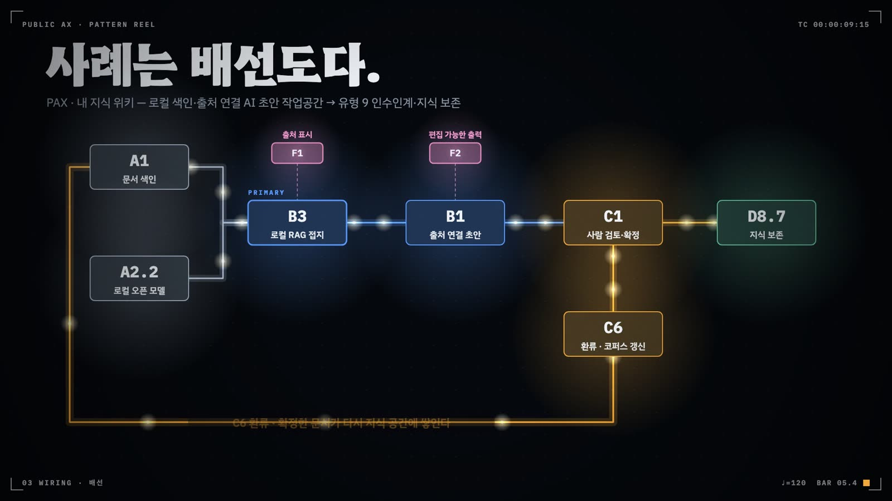

조립 예시와 축 교차표
부품 이름을 외우는 것으로는 과제를 읽지 못한다. PAX 사례 네 건의 조립도를 펼쳐 놓고, 다른 분류 체계와 부품을 맞대어 보고, PAX 557건에서 자주 함께 나오는 부품 묶음을 센 뒤 가람시의 전 부서를 한 장의 조립도로 그린다.
- 조립도를 읽는 표기(환경 조건, 주 부품, 배선, 결손 부품)를 익히고 실제 사례에 적용한다
- 기관 공식 사례와 개인·커뮤니티 도구의 조립이 왜 서로 다른 자리에서 비어 있는지 설명한다
- 마이크로서비스 패턴과 PAX 평가축을 카탈로그 부품으로 옮겨 읽는다
- 공동 출현과 향상도로 복합 패턴을 찾고, 그 한계를 안다
- 기관 전체를 공유 계층과 부서별 주 부품으로 나눈 종합 조립도를 그린다
정보통신과 AX팀의 화이트보드에는 12장에서 그린 유형별 템플릿 다섯 장이 붙어 있다. 템플릿은 빈칸이 정해진 서식이다. 실제 과제는 그 서식을 다 채우지 않은 채로 들어온다. 어떤 칸은 비어 있고 어떤 칸에는 서식에 없던 부품이 끼어 있다. 같은 업무 컴포넌트라도 망 환경에 따라 배선이 전혀 달라지기도 한다. 서식을 아는 것과 실물을 읽는 것은 다른 기술이다.
AX팀이 실물을 읽을 때 쓰는 도구는 넷이다. 같은 표기로 그린 조립도, 다른 분류 체계를 부품 이름으로 옮기는 교차표, PAX 557건에서 함께 나오는 부품 쌍을 센 복합 패턴(compound pattern) 후보, 그리고 기관 전체를 한 장에 올린 종합 조립도다.
13.1 조립도 읽는 법
카탈로그는 과제 하나를 부품의 배선도로 적는다(1장). 이 장의 그림은 모두 같은 표기를 쓴다. 왼쪽 보라색 상자는 환경 조건 E다. 배포망, 모델 의존, 권한 범위가 여기에 들어간다. 이 상자에서는 화살표가 나가지 않는다. 오른쪽의 모든 부품이 지켜야 할 전제이기 때문이다. 가운데 줄은 가치 흐름이다. 데이터나 도구가 주 부품으로 들어가고, 주 부품의 산출물이 운영 부품을 거쳐 서비스 블록 D로 나간다. 아랫줄에는 가치 흐름에 직접 서지 않는 부품이 붙는다. 환류, 폴백, 감사 로그, 보안 부품이 대개 여기 온다.

붉은 점선 상자는 결손 부품(missing component)이다. 서비스 유형의 필수 부품인데 태깅되지 않았거나, 다음 AX 단계로 가려면 반드시 있어야 하는데 비어 있는 자리다. 과제를 평가할 때 가장 쓸모 있는 정보는 무엇이 있느냐보다 무엇이 빠져서 다음 단계가 막혔느냐다. 그래서 빈자리도 그린다.
13.2 기관 공식 두 건: 산출물은 있고 통제가 고르지 않다
그림 13.1의 위쪽은 한국과학기술연구원(KIST) AIX전략실이 기관 계정으로 공개한 「KIST hwpx 스킬」이다. 상용 AI 도구에 얹어 쓰는 에이전트 스킬이다. 기관 보고서 규범을 묶은 스킬 파일(A9업무 규범 스킬)이 B1코파일럿의 초안 작성을 이끌고, HWPX 생성 계층(A10문서 형식 어댑터)이 결과를 한글 문서로 만든다. 모델은 호스트 도구가 부르는 해외 상용 API(A2.1상용 API 호출)다. 산출물은 보고서 초안(D8.3초안·기안)이고, 부서가 스스로 AI를 쓰게 하려는 기관 정책의 공식 산출물이라 전이 단계는 기관 공식이다.
이 조립에는 운영 부품이 하나도 태깅되지 않았다. 사람의 확정(C1검토 큐), 출력 제약(C5가드레일 필터), 고쳐 쓸 수 있는 출력(F2편집 가능한 출력)을 모두 호스트 도구의 몫으로 남겨 두었기 때문이다. 검증기는 유형 4의 필수 부품 가운데 C1·C5·F2를 결손으로 적고, 해외 상용 API를 쓰는데 폴백(C7폴백 스위치)이 없다는 경고를 낸다. 기관 공식이라는 지위가 통제 부품을 대신해 주지는 않는다. 이 스킬의 다음 단계는 초안 끝에 작성자 확인 칸을 두고 편집 가능한 출력 형식을 정하는 일이다.
아래쪽은 광진구가 소속 공무원이 직접 만든 AI 도구 여섯 종을 전 직원 업무에 투입한 사례다. 법령·통계·건축 도구는 기관 자체 AI 서비스와 연동해 원문과 출처를 함께 제시한다. 주 부품은 B3지식 접지 상담이고, 문서 요약·재작성(B1)과 주소 정리·문서 검색(B0결정적 도구)이 보조로 붙는다. 모델 호출은 기관 AI 서비스를 거치므로 A2.4내부망 프록시로 태깅했다. 광진구는 개인정보 입력 금지, 원문·출처 확인 의무, 담당자와 팀장의 최종 판단 책임, 전용 문의 창구를 관리 원칙으로 공표했다. 태거는 이 원칙을 근거로 C1을 present, 개인정보 입력 금지를 C5 implemented로 적었다.
PAX 4축 평가는 이 사례를 AI-First로 판정했다. 다만 판정문에는 공표된 관리 원칙에 기댄 잠정 충족이라는 단서가 붙어 있다. 단계를 올린 근거는 사람의 확정 책임을 명문화한 관리 원칙이다. 빈자리도 남아 있다. 유형 4가 요구하는 업무 규범 스킬(A9), 문서 형식 어댑터(A10), 편집 가능한 출력(F2)이 태깅되지 않았고, 관리 원칙이 실제로 지켜지는지 보여 줄 사용 기록(C4감사 로그·지표)도 서술되지 않았다. First 판정을 확정하려면 C4의 운영 증거가 필요하다.
13.3 PAX 자생 도구 두 건: 기반은 있고 산출물이 비어 있다
PAX의 개인·커뮤니티 도구로 넘어가면 빈자리의 모양이 달라진다. 그림 13.2의 위쪽은 공직 현장의 개인 개발자가 만든 「온나라 sAIde」다. 온나라 2.0 문서등록대장이나 접수대기함에서 공문을 고르면 원본 화면 옆에 사이드패널이 열린다. 사이드패널은 각 문서를 로컬 모델로 요약·분석하고 첨부파일을 한 번에 내려받는다. 표준 시스템에 손대지 않고 사용자 쪽 브라우저 층에서 조립했으므로 주 부품은 B8레거시 오버레이이고, 요약을 맡은 B1이 secondary로 붙는다. 문서가 PC 밖으로 나가면 안 된다는 조건은 A2.2주권형 온프레미스 변형으로 충족했다.
이 조립에는 운영 부품이 하나도 없다. 요약을 누가 어떻게 검토하는지(C1), 누가 얼마나 쓰는지(C4)가 공개 자료에 적혀 있지 않다. 태거는 X9담당자와 함께 사라지는 도구도 달았다. 개인 도구가 부서로 번지려면 C1과 C4 서술이 필요하다. 기관 공식으로 가는 길은 따로 있다. 온나라가 정식 MCP 서버(A8MCP 서버·호스트)를 제공하는 순간 B8은 퇴출 대상이 된다(4.2 등재·퇴출 규칙).
아래쪽은 오픈소스 커뮤니티가 공유한 「망분리 환경용 로컬 AI 에이전트」와 국가통계포털(KOSIS) 공식 MCP의 연동 시연이다. 노트북에서 모델까지 돌리는 로컬 에이전트(B6에이전트 오케스트레이터)가 KOSIS MCP를 도구로 불러 통계 조회부터 차트 생성까지 이어 간다. 도구마다 위험도를 평가하고 실행을 승인받으며(C8권한 경계·킬스위치), 감사 대시보드(C4)를 갖췄다. 태깅 파일에는 S1·S5·S9 보안 부품과 F1·F6·F8 상호작용 부품까지 올라 있다. PAX 표본에서 C8이 이만큼 구체적으로 서술된 사례는 드물다.
그런데 이 조립에는 실제 업무 산출물이 없다. 시연 단계라 사람이 받아 쓰는 결과물이 확인되지 않았고, 태거는 X8MCP 서버 개수 세기를 함께 달았다. 모델 장애 대응(C7)도 서술되지 않았다. 통제 부품이 먼저 갖춰지고 업무 산출물이 아직 없는, 13.2의 두 기관 사례와 정반대 순서의 조립이다.
표 13.1은 네 조립을 나란히 놓는다. 기관 공식 사례는 산출물이 있는데 통제 부품이 고르지 않다. 한 곳은 확정과 폴백을 호스트 도구에 맡겼고, 다른 곳은 관리 원칙으로 확정 책임을 세웠지만 사용 기록이 없다. 개인·커뮤니티 도구는 기반 부품과 환경 다양성을 갖췄지만 업무 산출물이나 운영 서술이 비었다. 한쪽의 빈칸을 채울 참조 구현이 같은 아카이브의 다른 쪽에 있다. 광진구의 관리 원칙은 개인 도구의 C1 서식이 되고, 로컬 에이전트의 권한 경계는 기관 에이전트 사업이 C8을 설계할 때 견본으로 쓸 만하다.
| 사례 | 환경 조건 | 주 부품 | 갖춘 운영 부품 | 결손 | 다음 단계 |
|---|---|---|---|---|---|
| PAX · KIST hwpx 스킬 | 인터넷망 · 해외 상용 API · P1 | B1 | 없음 | C1, C5, F2(C7 경고) | 초안에 작성자 확인 칸을 두고 편집 가능한 출력 형식을 정한다 |
| PAX · 광진구 AI 도구 6종 | 배포망 미확인 · 모델 미상 · P1 | B3 | C1(present), C5(implemented) | A9, A10, F2 | 관리 원칙의 이행을 사용 기록(C4)으로 보여 First 판정을 확정한다 |
| PAX · 온나라 sAIde | 행정망 · 로컬 모델 · P1 | B8 | 없음 | C1, C4 | 검토·사용 기록 서술 후 부서 공유, 정식 MCP 개방 시 A8로 교체 |
| PAX · 로컬 AI 에이전트 + KOSIS MCP | 로컬 PC · 로컬 모델 · P2 | B6 | C2, C4, C8 | 업무 산출물, C7 | 실제 업무에서 호출되는 흐름을 확인 |
13.4 축 교차표: 다른 분류 체계를 부품으로 옮기기
정보화 부서는 이미 다른 언어로 시스템을 설명한다. 인프라 담당자는 마이크로서비스 패턴으로 말하고, PAX 사례를 검토하는 사람은 PAX 평가축으로 말한다. 카탈로그 §8의 축 교차표는 두 언어를 부품 이름으로 옮기는 사전이다. 표 13.2는 마이크로서비스 패턴 24종이 카탈로그의 어느 부품에 대응하는지 보여 준다.
| 그룹 | 마이크로서비스 패턴 | 카탈로그에서 대응하는 자리 |
|---|---|---|
| 분해 | Business Capability · Subdomain | 부품으로 옮기지 않고 원칙으로 받는다. 업무 단위 분할은 S축(S1 단일 기능 → S4 종단 서비스)과 D8 업무 10분류로 읽는다. |
| 통합 | API Gateway | A2모델 서빙 계층 · A8 · C2위험도 라우터 |
| 통합 | Aggregator | B6 · B3지식 접지 상담(다중 출처 접지) |
| 통합 | Client-side UI Composition | B8 · B0결정적 도구(대시보드) |
| 데이터 | DB per Service · Shared DB | A1 · A4데이터 연계 서비스 |
| 데이터 | Saga | C3상태 머신·롤백 |
| 관측 | Log Aggregation · Metrics · Tracing · Health Check | C4의 하위 네 항목 |
| 횡단 | External Configuration | A9업무 규범 스킬(규범·프롬프트를 코드 밖으로) |
| 횡단 | Service Discovery | A8(도구 목록·버전·갱신 공지) |
| 횡단 | Circuit Breaker · Blue-Green | C7(무중단 모델 교체 포함) |
| 보안 | Access Token · Federated Identity | C8 · A3공공 API 제공자(인가가 최대 병목) |
| 신뢰성 | Bulkhead · Rate Limiter | C7 격리 · C8 호출 상한 |
| 배포 | Per Host · Per Container · Serverless · Mesh | E3 실행 형태(설치형, 서버 구축, 브라우저만, MCP·CLI) |
대응표에서 눈여겨볼 것은 빈 행이 없다는 점보다 한 패턴이 여러 부품으로 갈라지는 지점이다. API Gateway는 카탈로그에서 세 부품으로 나뉜다. 모델을 부르는 관문(A2), 도구를 부르는 관문(A8), 위험도에 따라 사람에게 넘기는 관문(C2)이다. 일반 시스템에서는 요청을 어디로 보낼지만 정하면 되지만, AI 과제에서는 어느 모델로 보낼지, 어느 도구를 부를지, 사람에게 넘길지를 따로 정해야 하기 때문이다. Circuit Breaker도 마찬가지다. 장애 시 차단에 그치지 않고 다른 모델이나 규칙 경로로 넘기는 다섯 경로가 C7의 변형으로 들어온다.
표 13.3은 PAX 평가축을 부품으로 읽는 법이다. PAX의 AX 단계, S·C·M·P 네 축, 보조축(인간 통제, 복원력, 피드백, 전이)이 모두 특정 부품의 보유 여부로 번역된다.
| PAX 축 | 값 | 카탈로그에서 읽는 법 |
|---|---|---|
| AX 단계 | Ready · Enabled · First · Native | A만 있으면 Ready, B가 산출물을 내면 Enabled, C2·C3·C4가 운영 증거와 함께 있으면 First, C6·C7까지 있으면 Native |
| S 업무 범위 | S1~S5 | B 부품이 덮는 폭. B0·B8은 S1~S2, B6은 S3 이상 가능 |
| C 완결성 | C0~C5 | C 계층 보유 수. C1만이면 C1~C2, C2·C3이면 C3~C4, C6·C7이면 C5 |
| M 파급력 | M1~M5 | A8의 전이 범위. M2 재사용형은 부서 공유, M4 생태계형은 범정부 탑재 |
| P 권한 | P0~P4 | E4 조건. P2 이상이면 C8 필수 |
| H 인간 통제 | H0~H2 | C1 검토 큐(H2) · C2 라우터(H1) |
| R 복원력 | 재시도 … 수동 전환 | C7 폴백 스위치의 다섯 경로 |
| 피드백 | 없음 · 로그 · 평가데이터화 · 지속개선 | C4 → C6의 성숙 순서 |
| T 전이 | 개인 → 부서 → 기관 공식 → 타 기관 → 범정부 | 모든 부품의 전이 범위 척도. 차단 요인은 보안검토·예산·담당자 이동·레거시 미연동·법적 근거·조직 저항 |
| MCP 6축 검증 | 권한 표면 · 비밀 · 공급망 · 위생 · 인젝션 · 데이터 흐름 | A8의 품질 관문. 통과해야 전이 범위가 부서 공유를 넘는다 |
첫 행이 가장 자주 쓰인다. 그림 13.3은 AX 단계를 부품 보유로 바꿔 그린 사다리다. 검토자가 "이 과제는 왜 First가 아닌가"라고 물으면 답은 계단 하나 위에 놓인 부품 이름이다. 2장의 관문과 같은 내용을 부품 쪽에서 본 그림이다.
13.5 복합 패턴: 자주 함께 나오는 부품 묶음
Erl의 패턴 체계에는 복합 패턴이 있다. 여러 패턴이 실무에서 늘 함께 적용되어 하나의 이름을 얻은 묶음이다. 카탈로그 v0.7.1에는 아직 복합 패턴 목록이 없다. 대신 PAX 557건의 전수 태깅이 있으므로 어떤 부품이 실제로 함께 쓰이는지 셀 수 있다.
세는 법: 빈도와 향상도
사례마다 태깅된 부품(B, B′, A, C, S, F, D 계층, 환경 조건 E 제외)의 모든 쌍을 세었다. C·S·F는 present와 implemented를 합산했다. 가장 많이 함께 나온 쌍은 A7자체 제작 환경과 B0으로 251건이다. 그런데 이 쌍은 묶음이라 부르기 어렵다. A7은 317건, B0은 413건에 나오므로 서로 무관해도 그만큼은 겹친다.
그래서 향상도(lift)를 함께 본다. 향상도는 두 부품이 함께 나온 사례 수를, 서로 무관할 때 기대되는 사례 수로 나눈 값이다. 식으로 쓰면 함께 나온 수 × 전체 사례 수 ÷ (A 단독 수 × B 단독 수)다. A7·B0의 향상도는 1.07로 우연 수준이다. 반면 A2.1상용 API 호출과 B1은 59건이 겹치고 향상도가 3.36이다. 상용 모델을 부르는 도구는 대개 코파일럿 형태라는 뜻이다.
그림 13.4는 PAX에서 사용 사례가 많은 부품 13개의 쌍별 공동 출현을 행렬로 그렸다. 원의 넓이가 함께 나온 사례 수이고, 진한 원은 향상도가 3 이상인 쌍이다.
표 13.4는 행렬 바깥까지 포함해 의미 있는 쌍을 추렸다. 위쪽은 사례 수가 많은 쌍이고, 아래쪽은 사례 수는 적지만 향상도가 매우 높은 쌍이다.
| 부품 쌍 | 함께 나온 사례 | 각 부품 단독 | 향상도 | 읽는 법 |
|---|---|---|---|---|
| A10 · D8.9 | 65 | 136 · 80 | 3.33 | 문서 형식 어댑터가 변환·서식 블록을 만든다 |
| A3 · A8 | 62 | 154 · 94 | 2.39 | 공공 API를 MCP 도구로 감싼다 |
| A2.1 · B1 | 59 | 88 · 111 | 3.36 | 상용 모델을 부르는 도구는 대개 코파일럿 |
| B1 · D8.3 | 51 | 111 · 64 | 4.00 | 코파일럿의 산출물은 초안·기안 |
| A1 · F1 | 43 | 110 · 87 | 2.50 | 데이터 화면은 출처를 붙인다 |
| A9 · B1 | 40 | 54 · 111 | 3.72 | 규범 스킬은 코파일럿에 꽂혀 쓰인다 |
| A2.2 · B1 | 38 | 54 · 111 | 3.53 | 로컬 모델도 코파일럿 형태로 쓰인다 |
| F1 · F7 | 31 | 87 · 63 | 3.15 | 출처 표시와 한계 안내는 짝으로 나온다 |
| A2.1 · B′9 | 13 | 88 · 17 | 4.84 | 상용 모델을 쓰면 판정은 규칙에 맡긴다 |
| B7 · D8.10 | 9 | 12 · 22 | 18.99 | 콘텐츠 생성기는 발간·홍보로 나간다 |
| B6 · B′7 | 7 | 15 · 16 | 16.25 | 오케스트레이터 안에는 ReAct 도구 루프가 있다 |
| C8 · F6 | 6 | 22 · 11 | 13.81 | 권한 경계는 이용자 쪽 행동 확인 화면과 함께 온다 |
| A2.5 · S13 | 5 | 15 · 5 | 37.13 | 로컬 비식별 게이트 다섯 건 모두가 자체 학습 모델 |
여섯 묶음
쌍을 세 개 이상으로 넓히면 이름을 붙일 만한 묶음이 나온다. 그림 13.5는 이 책이 붙인 이름으로 여섯 묶음을 정리했다. 이 이름들은 카탈로그에 등재된 부품명이 아니다. 독자가 조립할 때 참고하도록 붙인 편의상 명칭이다. 사례 수는 묶음의 부품이 모두 함께 태깅된 PAX 사례 수다.
여섯 묶음은 성격이 둘로 갈린다. 앞의 세 묶음은 PAX 자생 도구의 저변 그 자체다. 스킬 코파일럿 묶음은 개인 개발자가 상용 모델에 업무 규범 스킬을 얹어 보고서를 쓰는 조립이다. 공공데이터 MCP 묶음과 문서 변환 묶음은 런타임 AI 없이 도는 결정적 도구다. 셋 다 묶음 안에 운영 부품이 없다. ① 묶음 32건 가운데 검토 큐(C1)가 함께 태깅된 사례는 7건이다. 운영 부품이 하나라도 있는 사례는 ② 묶음 60건 가운데 8건, ③ 묶음 57건 가운데 12건이다. 묶음을 그대로 가져다 쓰면 결손까지 함께 복제된다.
뒤의 세 묶음은 통제를 담는다. ④ 근거·한계 고지 묶음은 이용자 면의 통제다. A1데이터 자산 서비스, F1출처 표시, F7한계·신뢰도 안내 셋이 함께 태깅된 사례가 20건으로, 데이터를 보여 주는 화면에 출처와 한계를 함께 붙이는 조립이다. 판정 게이트 묶음을 보면, B′9가 쓰인 17건 가운데 7건에서 상용 모델과 C5가드레일 필터가 함께 나왔다. 모델에게 판정을 맡기지 않으려는 개발자의 선택이 같은 모양으로 반복된 것이다. 에이전트 통제 묶음은 네 부품이 모두 갖춰진 사례가 2건뿐이라 Rule of Three를 채우지 못한다. 그래도 C8과 F6의 향상도는 13을 넘는다. 권한 경계를 서술하는 개발자는 이용자 쪽 확인 화면(F6에이전트 행동 검토·확인)도 함께 만든다.
13.6 가람시 종합 조립도
과제별 조립도를 다 그렸다면 기관 전체를 한 장으로 올릴 차례다. 과제 조립도를 그대로 겹치면 같은 부품이 다섯 번 그려진다. 그래서 종합 조립도는 여러 부서가 같은 부품을 쓰는 자리를 찾아 공유 계층으로 내리고, 부서에는 주 부품과 서비스 블록만 남긴다.
그림 13.6은 가람시의 다섯 줄기를 한 장에 모았다. 위쪽 두 줄이 부서별 부분이다. 민원여권과는 지식 접지 상담(B3)과 라우터 원형(B′2라우터·디스패처)으로 대민 안내(D1안내·탐색)를 낸다. 재난안전과는 하천 수위 센서와 CCTV를 보는 B5로 통지 블록(D5통지·추적)을 낸다. 기획예산과는 B1로 D8.3초안·기안을, 복지정책과는 B2예측·추천기와 B′9결정론 판정 게이트로 D8.4대조·점검을 낸다. 개인 개발 공무원들의 도구는 B0과 A8로 D8.9변환·서식을 맡는다.
아래 네 줄은 기관 공유 계층이다. 운영 부품 여덟 개, 보안 부품 네 개, 공통 서비스 아홉 개가 부서 경계 없이 한 번씩만 놓인다. 맨 아래 환경 조건 띠가 이 모든 부품의 전제다. 행정망과 인터넷망이 분리되어 있고, 상용 API는 내부망 프록시를 거쳐야만 부를 수 있으며, 데이터는 대부분 S(민감) 등급이다.
이 그림에서 가장 비싼 결정은 모델 호출 관문을 둘로 고정한 것이다. 상용 모델은 A2.4 프록시로, 민감 데이터는 로컬 모델 서버(A2.2)로만 간다. 관문이 둘뿐이니 C7과 C4도 두 곳에만 붙이면 된다. 다섯 부서가 각자 붙였다면 열 곳이었다. 반대로 공유 계층으로 내리지 않은 부품도 있다. 민원여권과의 라우터 원형과 복지정책과의 판정 게이트는 업무 규칙을 담고 있어 부서 안에 둔다. 공유할지 말지의 기준은 그 부품이 업무 지식을 담는지, 기관 공통의 통제를 담는지다.
핵심 정리
- 조립도는 환경 조건, 가치 흐름(주 부품 → 운영 부품 → 서비스 블록), 결손 부품을 한 그림에 담는다. 결손 부품이 곧 다음 단계의 작업 목록이다.
- PAX의 기관 공식 사례도 통제 부품이 고르지 않다. KIST hwpx 스킬은 확정·제약·폴백을 호스트 도구에 맡겼고, 광진구 AI 도구 6종은 공표한 관리 원칙으로 C1을 갖춰 First 잠정 판정을 받았다.
- 개인·커뮤니티 도구는 기반 부품과 환경 다양성을 갖췄지만 운영 서술이나 업무 산출물이 비어 있다. 같은 아카이브 안에 서로의 빈칸을 채울 참조 구현이 있다.
- 마이크로서비스 패턴은 AI 과제에서 여러 부품으로 갈라진다. API Gateway는 A2·A8·C2로, Circuit Breaker는 C7의 다섯 경로로 옮겨 읽는다.
- PAX 평가축은 부품 보유로 번역된다. AX 단계는 A → B → C2·C3·C4 → C6·C7의 사다리이며, 판정에는 present만 센다.
- 공동 출현은 빈도와 향상도를 함께 봐야 한다. PAX 557건에서 스킬 코파일럿(A2.1·A9·B1), 공공데이터 MCP(A3·A8·B0), 문서 변환(A10·B0·D8.9) 묶음이 확립 수준으로 반복된다.
- 종합 조립도는 공유 부품을 기관 계층으로 내려 그린다. 모델 호출 관문을 고정하면 폴백과 감사 로그를 붙일 자리가 줄어든다.
© 2026 전종홍. 이 책은 CC BY-NC-SA 4.0 (저작자표시-비영리-동일조건변경허락) 라이선스를 따릅니다. 저작자를 밝히고 비영리 목적으로만 쓸 수 있으며, 고치거나 덧붙인 저작물은 같은 조건으로 배포해야 합니다.